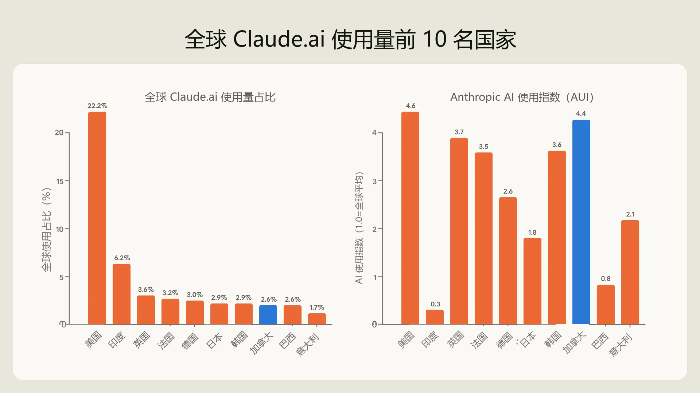
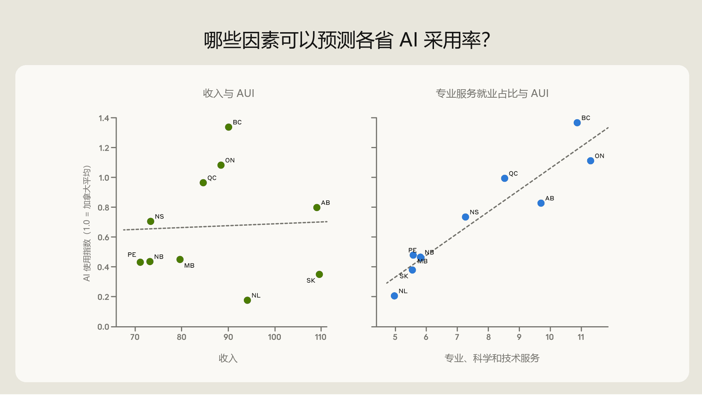
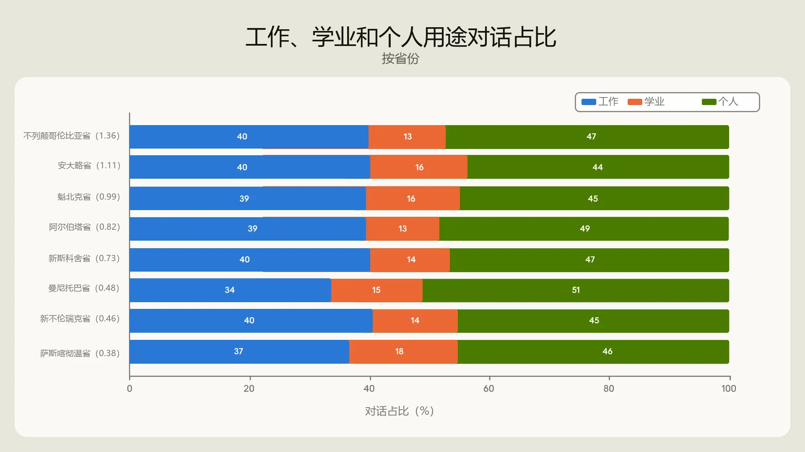
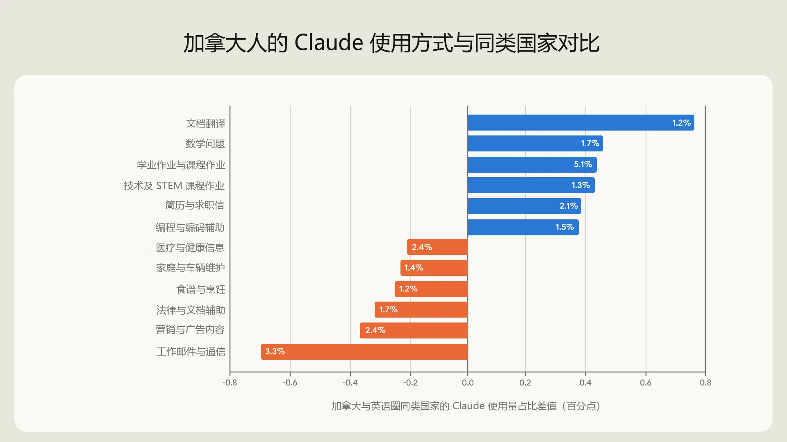
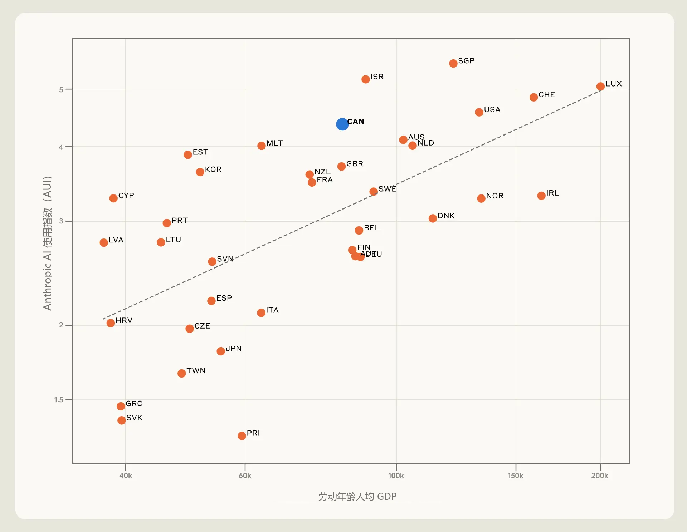
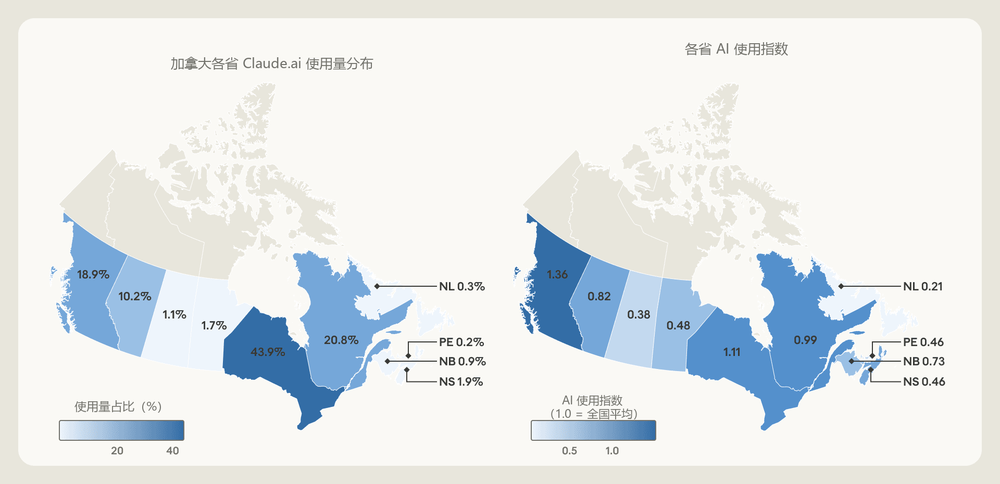
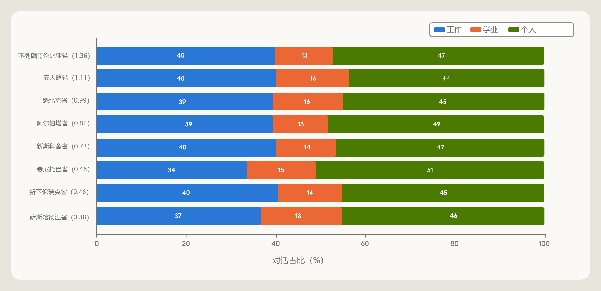
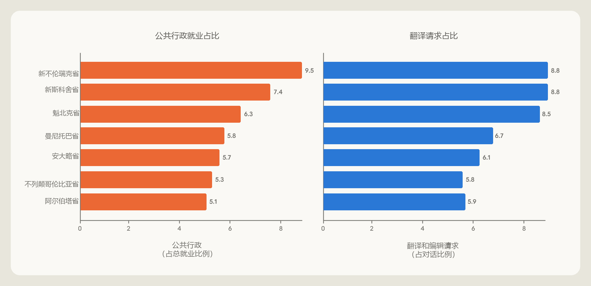

加拿大如何使用 Claude：来自 Anthropic 经济指数的发现
📖 中文摘要
专业术语注解
经济指数：基于匿名使用数据研究 AI 对经济影响的系列报告人均使用指数：衡量某地区使用量相对其人口规模的指标采用率：用户群体开始使用某产品的比例劳动力构成：就业人口在不同行业部门的分布结构官方双语：政府服务与通信使用两种官方语言的制度📄 中文全文
- 分类： Economic Research
- 来源： https://www.anthropic.com/research/how-canada-uses-claude
Economic Research 2026 年 7 月 14 日 法文版附后（Le français suit）。
主要发现
- 根据 Anthropic 经济指数的最新发布，加拿大处于 Claude 采用的前沿。加拿大占全球 Claude.ai 流量的 2.6%，按总量排名第 8 位。人均使用量是按其人口规模预期水平的四倍以上。
- 加拿大的高采用率与其高收入经济体总体一致，但在同类国家群体中仍然突出。在合计代表全球一半以上使用量的前十名国家中，加拿大的人均使用量仅次于美国。
- 在加拿大国内，采用率呈现区域集中。安大略省占对话量的 43.9%。加上魁北克省、不列颠哥伦比亚省和阿尔伯塔省，这四大省份合计约占全国使用量的 94%。按人均计算，不列颠哥伦比亚省以超出人口预期水平 1.4 倍领先，其次是安大略省的 1.1 倍；其他所有省份的采用率均低于基准水平，其中纽芬兰和拉布拉多省为 0.2 倍。
- 与全球跨国模式相反，省级人均收入似乎无法解释这一差距。相反，产业结构似乎更为重要：专业、科学和技术服务部门规模较大的省份使用 Claude 最多。这与其他证据一致，即与劳动力结构相匹配的模型能力决定了高收入国家内部的总体采用水平。
- 加拿大的使用模式与采用率基本不相关：每个省份中，工作用途占对话量的 34%–40%，学业用途占 13%–18%，个人用途占 44%–51%。
- 我们发现特定用途与地方经济特征相吻合。翻译请求在各省份之间跟随公共行政就业占比变化，这可能反映了加拿大在联邦服务和通信中实行官方双语的政策：新不伦瑞克省、新斯科舍省和魁北克省既拥有最高的公共行政就业率，也拥有最大的翻译对话份额。
- 与英语圈同类国家相比，文档翻译也是加拿大最具特色的用途。更广泛地说，加拿大的使用偏向学术和职业生涯早期用途：学术课程作业、编程辅助和简历撰写均占比过高，而专业沟通和日常个人任务占比偏低。
加拿大处于 Claude 采用的前沿
Claude 在加拿大的采用率很高。基于 2026 年 2 月 Claude.ai 对话样本，全球流量的 2.6% 来自加拿大。经人口调整后，其 Anthropic AI 使用指数（AUI）为 4.4，这意味着人均使用量比基于其劳动年龄人口预期的水平高出四倍以上。在按 Claude 使用总量领先的前十名国家中，加拿大的 AUI 排名第二，仅次于美国（图 1）。

图 1：全球 Claude.ai 使用量前十名国家的使用份额与人均采用率条形图显示基于 2026 年 2 月从 Claude.ai 抽样的一百万次对话计算出的各国份额（左图）和 Anthropic AI 使用指数（右图）。加拿大以蓝色突出显示。Anthropic AI 使用指数（AUI）衡量一个国家的 Claude 使用量相对于其劳动年龄人口是过高还是过低。加拿大占全球 Claude.ai 消费使用的 2.6%，全球排名第八，按 AUI 排名第二。来源：Anthropic 经济指数，2026 年 2 月；世界银行。 这部分反映了加拿大是高收入国家的事实。在 IMF 定义的发达经济体中，人均使用量与劳动年龄人均 GDP 之间存在明显联系。但加拿大的采用率超过了按其收入预期的水平（图 2）。从这个意义上说，与同类国家相比，加拿大在其 AI 采用曲线上似乎走得更远，这或许反映了其高受教育水平的劳动力以及与美国的科技前沿的邻近性。
 图 2：Anthropic AI 使用指数（AUI）与劳动年龄人均 GDP
图 2：Anthropic AI 使用指数（AUI）与劳动年龄人均 GDP该图显示了 IMF 发达经济体中（样本至少包含 200 次对话的国家）每个国家的 AUI 与劳动年龄人均 GDP 之间的双变量关系。虚线为最佳拟合线。加拿大以蓝色突出显示。来源：Anthropic 经济指数，2026 年 2 月；IMF；世界银行。
加拿大国内采用率集中，并与劳动力结构相关
正如 Claude 的全球采用不成比例地集中在少数国家一样，加拿大国内的使用在各省份之间分布也不均匀。安大略省占对话量的 43.9%。加拿大国内另外 50% 的使用来自魁北克省（20.8%）、不列颠哥伦比亚省（18.9%）和阿尔伯塔省（10.2%）。经人口调整后，排序发生变化：不列颠哥伦比亚省的 Claude 使用量比按其劳动年龄人口预期的水平高出 1.4 倍，其次是安大略省（1.1 倍）。其余省份的采用率低于基准水平。纽芬兰和拉布拉多省的 AUI 为 0.2。
 图 3：加拿大各省和地区的 Claude.ai 使用份额
图 3：加拿大各省和地区的 Claude.ai 使用份额
左图：各省占加拿大 Claude.ai 对话的份额。右图：各省的 AUI，其中 1.0 表示使用量与省份劳动年龄人口成比例。地区低于报告阈值。来源：Anthropic 经济指数，2026 年 2 月；加拿大统计局。
是什么解释了区域采用的模式？我们在图 4 中探讨了这个问题。与收入与使用量之间的全球关系相反，我们发现省级人均使用量与收入基本不相关。相反，我们发现区域经济的产业结构是使用强度的关键决定因素：专业、科学和技术服务部门规模较大（按就业份额衡量）的地区，人均使用量系统性更高。
显然，劳动力结构——而非收入本身——是加拿大国内采用模式的关键决定因素。这一证据与我们早先关于美国境内采用扩散的发现一致。看来，高收入国家的 AI 采用主要受模型能力与当地经济结构匹配程度的影响。

图 4：Anthropic AI 使用指数（AUI）与省级经济特征各面板将省级 AUI 与省级特征绘制在一起：劳动年龄人均 GDP（左）和专业、科学和技术服务就业份额（右）。来源：Anthropic 经济指数，2026 年 2 月；加拿大统计局。
了解加拿大国内 Claude 的独特用途
尽管 Claude 使用的_比率_存在很大的地区差异，但加拿大各地的人们使用 Claude 的方式大体相似。在每个省份，个人用途——查询健康信息、研究产品、寻求食谱或家居维修帮助——占对话量的 44% 至 51%。工作相关用途，即使用 Claude 排除软件故障、起草工作邮件和构建业务应用程序，约占 34% 至 40%。剩下的则是使用 Claude 协助与课程作业相关的任务（图 5）。

图 5：加拿大各省的用途组合每个省份被归类为工作、学业或个人用途的对话份额，按省级 AUI（括号内）排序。来源：Anthropic 经济指数，2026 年 2 月。 虽然各省的总体使用模式一致，但我们仍然发现特定用途往往与地方经济特征相吻合的证据。例如，我们发现，在全国公共行政就业占比较高的地区，使用 Claude 进行翻译和编辑请求的比例系统性更高——这可能反映了加拿大在公共部门对官方双语的承诺，只要政府就业集中，就会产生英法翻译需求。事实上，新不伦瑞克省、新斯科舍省和魁北克省都拥有最高的公共行政就业率和最大的翻译辅助相关对话份额。
 图 6：各省翻译使用量与公共行政就业
图 6：各省翻译使用量与公共行政就业左图：公共行政就业占各省总就业的份额。右图：翻译和编辑请求占各省对话量的份额，针对高于报告阈值的七个省份。来源：Anthropic 经济指数，2026 年 2 月；加拿大统计局。
事实上，与同样拥有大量 Claude 使用的英语圈同类国家——澳大利亚、英国和美国——相比，文档翻译使用是加拿大整体上最具特色的用途（图 7）。更广泛地说，我们发现加拿大的使用偏向教育和劳动力市场进入：学术课程作业（数学和 STEM）、编程辅助和简历撰写是与同类国家相比占比过高的类别中最突出的。加拿大占比偏低的类别则偏向专业沟通——工作邮件、营销内容、法律辅助——以及帮助烹饪、家居维护和健康问题的日常个人任务。

图 7：加拿大与英语圈同类国家（澳大利亚、英国和美国）相比独特的 Claude 用途该图显示了加拿大与澳大利亚、英国和美国平均水平的对话百分比净差，针对至少占加拿大对话 1% 的各种对话分组（6 个最具加拿大特色的和 6 个在同类国家中最具特色的）。来源：Anthropic 经济指数，2026 年 2 月。
结论
加拿大是世界上 Claude 采用率最高的国家之一，无论是按总体流量（占全球 Claude.ai 流量的 2.6%）还是按人口规模调整后计算。如此高的采用强度使我们能够更好地理解 Claude 的使用如何反映加拿大经济的结构和更广泛的经济状况。 在全国范围内，专业、科学和技术服务工作者占比更高的省份采用率最高。这与以下观点一致：与当地经济构成良好匹配的模型能力主要驱动总体采用率。这与全球采用模式形成对比，全球模式似乎与人均收入联系更紧密。 特定用途也反映了加拿大经济的结构。公共行政就业较多的省份翻译使用更普遍，这与适用于加拿大大部分公共部门的官方语言要求一致——而文档翻译是加拿大相对于英语圈同类国家最具特色的 Claude 用途。更广泛地说，加拿大的使用偏向教育和劳动力市场进入，学术课程作业、编程辅助和简历撰写相对于澳大利亚、英国和美国均占比过高。
引用
@online{mccrory2026canadacountrybrief,
author = {Peter McCrory},
title = {How Canada Uses Claude: Findings from the Anthropic Economic Index},
date = {2026-06},
year = {2026},
url = {https://www.anthropic.com/research/how-canada-uses-claude},
}
加拿大如何使用 Claude：Anthropic 经济指数的发现（法文版）
主要发现
- Anthropic 经济指数最新一期显示，加拿大是采用 Claude 人工智能（AI）最多的国家之一。加拿大占 Claude.ai 全球流量的 2.6%，按总量排名第 8 位。其人均使用量是按其人口规模预期水平的四倍以上。
- 加拿大观察到的较高采用率总体上与其高收入经济体地位相符，但与其他可比国家相比仍然突出。在合计代表总使用量一半以上的前十名国家中，加拿大的人均使用量仅次于美国，排名第二。
- 在加拿大，采用集中在某些地区。安大略省占对话量的 43.9%。四大省份（安大略省、魁北克省、不列颠哥伦比亚省和阿尔伯塔省）约占全国使用量的 94%。按人均计算，不列颠哥伦比亚省以高于预期水平 1.4 倍领先，其次是安大略省，为 1.1 倍。所有其他省份的采用率均低于预期水平，纽芬兰和拉布拉多省最低，为其预期水平的 0.2 倍。
- 与全球各国间的趋势相反，各省的人均收入似乎无法解释这一差距。事实上，经济结构的构成似乎更为重要，因为专业、科学和技术服务占主导地位的省份使用 Claude 最多，这与其他证据相符，即 AI 模型能力与劳动力构成的匹配关系决定了高收入国家的总体采用水平。
- 加拿大观察到的使用习惯与采用率几乎没有相关性：所有省份中，34% 至 40% 的对话属于职业用途，13% 至 18% 与学业有关，44% 至 51% 属于个人用途。
- 结果表明，某些特定类型的用途与地方经济特征相吻合。翻译帮助请求反映了各省公共部门的重要性，可能反映了加拿大在联邦服务和通信中实行官方双语的政策；新不伦瑞克省、新斯科舍省和魁北克省既拥有最高的公共部门就业率，也拥有最大的翻译对话比例。
- 与其他英语圈国家相比，文档翻译也是加拿大最具特色的用途类型。更普遍地说，加拿大对 Claude 的使用倾向于学业和职业生涯早期场景：课程作业、编程辅助和简历撰写均占比过高，而专业沟通和日常个人任务占比偏低。
加拿大是采用 Claude 最多的国家之一
Claude 在加拿大的采用率很高。在 2026 年 2 月 Claude.ai 上记录的对话样本中，全球流量的 2.6% 位于加拿大。如果考虑人口因素，加拿大的 Anthropic AI 使用指数（Anthropic AI Usage Index，AUI）为 4.4，这意味着人均使用量比按其劳动年龄人口预期的水平高出四倍以上。在 Claude 使用量最多的前十名国家中，加拿大的 AUI 排名第二，仅次于美国（图 1）。
 图 1 – 使用 Claude.ai 最多的十个国家的使用份额与人均采用率
图 1 – 使用 Claude.ai 最多的十个国家的使用份额与人均采用率
条形图显示每个国家的份额（左图）和 Anthropic AI 使用指数（右图），基于 2026 年 2 月 Claude.ai 上的一百万次对话样本计算。加拿大以蓝色突出显示。Anthropic AI 使用指数（AUI）表示一个国家的 Claude 使用量相对于其劳动年龄人口是偏高还是偏低。加拿大占 Claude.ai 全球使用量的 2.6%，全球排名第八，但按 AUI 排名第二。来源：Anthropic 经济指数，2026 年 2 月；世界银行。
这一结果部分由于加拿大是高收入国家。在发达经济体（按 IMF 定义）中，人均使用量与劳动年龄人均 GDP 之间存在明显联系。但加拿大的采用率超过了按其收入预期的水平（图 2）。事实上，与其他可比国家相比，加拿大在 AI 采用方面似乎更为领先，这或许可以用其高素质劳动力和与美国科技前沿的邻近来解释。

图 2 – Anthropic AI 使用指数（AUI）与劳动年龄人均 GDP 该图显示了 AUI 与劳动年龄人均 GDP 之间的双变量关系，针对样本中至少包含 200 次对话的发达经济体（按 IMF 定义）。虚线表示最佳拟合线。加拿大以蓝色突出显示。来源：Anthropic 经济指数，2026 年 2 月；IMF；世界银行。在加拿大国内，采用是集中的，并与劳动力构成相对应
与 Claude 的全球采用不成比例地集中在少数国家一样，其在加拿大的使用也不均衡地集中在某些省份。安大略省占对话量的 43.9%。其余方面，加拿大 50% 的使用量归因于魁北克省（20.8%）、不列颠哥伦比亚省（18.9%）和阿尔伯塔省（10.2%）。如果考虑人口因素，排名会发生变化：不列颠哥伦比亚省的 Claude 使用量比按其劳动年龄人口预期的水平高出 1.4 倍，其次是安大略省（1.1 倍）。其他省份的采用率低于全国平均水平。排名最后的是纽芬兰和拉布拉多省，AUI 为 0.2。

图 3 – 加拿大各省和地区的 Claude.ai 使用分布左图：各省占加拿大 Claude.ai 对话的份额。右图：各省的 AUI，其中 1.0 表示使用量与省份劳动年龄人口成比例。地区低于纳入阈值。来源：Anthropic 经济指数，2026 年 2 月；加拿大统计局。 什么解释了采用率的这些地区差异？图 4 对此进行了探讨。与全球收入与使用量之间观察到的关系相反，各省之间的人均使用率差异与收入普遍不相关。相反，区域经济的产业结构似乎是使用强度的决定性因素：专业、科学和技术服务在就业中占比较大的地区，人均使用量系统性更高。 显然，劳动力构成（而非收入）是加拿大采用趋势的决定性因素。这一发现与我们对美国采用率的先前观察一致。看来，高收入国家的 AI 采用主要取决于 AI 模型能力与当地经济结构之间的匹配程度。
 图 4 – Anthropic AI 使用指数（AUI）与省级经济特征
图 4 – Anthropic AI 使用指数（AUI）与省级经济特征各图将各省的 AUI 与其经济特征进行比较：劳动年龄人均 GDP（左）和劳动力市场中专业、科学和技术服务的占比（右）。来源：Anthropic 经济指数，2026 年 2 月；加拿大统计局。
分析加拿大国内 Claude 使用的差异
除了 Claude 使用_比率_的重大地区差异之外，加拿大人使用 Claude 的目的大体相似。在所有省份中，个人用途（健康信息搜索、产品搜索、食谱搜索或家居 DIY 建议）占对话量的 44% 至 51%。职业用途（例如使用 Claude 排除软件故障、撰写电子邮件和开发企业应用程序）约占对话量的 34% 至 40%。其余用途与课程作业有关（图 5）。

图 5 – 加拿大各省的用途类型每个省份中与工作、学业和个人用途相关的对话百分比；省份按省级 AUI（括号内）排序。来源：Anthropic 经济指数，2026 年 2 月。 虽然各省的总体使用趋势相似，但我们仍然注意到，用途类型往往与地方经济特征相吻合。例如，在公共部门占就业主导地位的地区，使用 Claude 进行翻译和修订的比例系统性更高，这可能反映了加拿大对公共部门官方双语的承诺，在公务员岗位较多的地方产生了相对较强的英法翻译需求。事实上，新不伦瑞克省、新斯科舍省和魁北克省既拥有最高的公共部门就业率，也拥有最大的翻译辅助讨论比例。

图 6 – 各省翻译任务比例与公共部门规模 左图：公共部门就业占各省总就业的份额。右图：翻译和修订帮助请求占超过纳入阈值的七个省份总对话量的份额。来源：Anthropic 经济指数，2026 年 2 月；加拿大统计局。 图 7 – 加拿大与英语国家（澳大利亚、英国和美国）相比的 Claude 用途类型 该图显示了加拿大与澳大利亚、英国和美国平均值的对话百分比净差，针对至少占加拿大对话 1% 的各种对话类型（6 个最具加拿大特色的主题和 6 个在可比国家中最具特色的主题）。来源：Anthropic 经济指数，2026 年 2 月。
事实上，与大量使用 Claude 的可比英语圈国家——澳大利亚、英国和美国——相比，文档翻译用途是加拿大使用上的最大差异（图 7）。更普遍地说，加拿大对 Claude 的使用主要围绕教育和进入劳动力市场：课程作业（数学和 STEM）、编码辅助和简历撰写是与可比国家相比占比过高的类别中最突出的。相反，加拿大在专业沟通（职业电子邮件、营销内容、法律辅助）和日常个人任务（烹饪、家务和健康建议）领域低于总体趋势。
图 7 – 加拿大与英语国家（澳大利亚、英国和美国）相比的 Claude 用途类型 该图显示了加拿大与澳大利亚、英国和美国平均值的对话百分比净差，针对至少占加拿大对话 1% 的各种对话类型（6 个最具加拿大特色的主题和 6 个在可比国家中最具特色的主题）。来源：Anthropic 经济指数，2026 年 2 月。
事实上，与大量使用 Claude 的可比英语圈国家——澳大利亚、英国和美国——相比，文档翻译用途是加拿大使用上的最大差异（图 7）。更普遍地说，加拿大对 Claude 的使用主要围绕教育和进入劳动力市场：课程作业（数学和 STEM）、编码辅助和简历撰写是与可比国家相比占比过高的类别中最突出的。相反，加拿大在专业沟通（职业电子邮件、营销内容、法律辅助）和日常个人任务（烹饪、家务和健康建议）领域低于总体趋势。
结论
加拿大是世界上 Claude 采用率最高的国家之一，无论按总体流量（占全球 Claude.ai 流量的 2.6%）还是按人口规模调整后计算。这种热情使我们能够更好地理解 Claude 的使用如何反映加拿大经济的结构和总体经济背景。 在全国范围内，专业、科学和技术服务在就业市场中占比最高的省份采用率最高。这一发现支持了以下论点：主要是与当地经济构成良好匹配的 AI 模型能力决定了总体采用率，这与世界其他地区观察到的趋势相反，那些地方的采用率似乎与人均收入密切相关。 某些用途类型也反映了加拿大经济的结构。翻译辅助用途在公共部门就业较多的省份更为普遍，这与适用于加拿大大部分公共部门的官方语言要求一致；其结果是，与其他英语圈国家相比，文档翻译是加拿大最具特色的 Claude 用途。更广泛地说，加拿大对 Claude 的使用更侧重于学业和进入劳动力市场，因为课程作业、编码辅助和简历撰写在加拿大的占比相对于澳大利亚、英国和美国均偏高。
引用
@online{mccrory2026canadacountrybrief,
author = {Peter McCrory},
title = {Utilisation de Claude au Canada : constatations présentées dans l'Anthropic Economic Index},
date = {2026-06},
year = {2026},
url = {https://www.anthropic.com/research/how-canada-uses-claude},
}
相关内容
深入了解 Claude 的数学能力
一个未发布的 Claude 研究版本在与黎曼猜想相关的问题上取得了进展。它改进了一个长期存在的下界——满足猜想的黎曼 zeta 函数零点的比例，将其从 41.6% 提高到 67.2%。 阅读更多
用 Claude 发现密码学弱点
密码学算法。第一种攻击显著削弱了 HAWK，这是一种为未来量子计算机能够攻破现有标准的世界而构建的数字签名方案。第二种识别出了一种攻击降轮 AES（最广泛使用的对称密码）的新方法。 阅读更多
Project Pilot：AI 能控制无人机吗？
与 Andon Labs 合作，我们开发了一系列新的评估，衡量 AI 模型使用飞行无人机的能力，最终形成了一个新基准：Drone-Bench。 阅读更多
▸ 英文原文（点击展开）
How Canada uses Claude: Findings from the Anthropic Economic Index
- Category: Economic Research
- Source: https://www.anthropic.com/research/how-canada-uses-claude
Economic Research
How Canada uses Claude: Findings from the Anthropic Economic Index
Jul 14, 2026 Le français suit.
Key findings
- Based on the latest release of the Anthropic Economic Index, Canada is at the forefront of Claude adoption. Canada represents 2.6% of global Claude.ai traffic and ranks 8th overall by total volume. Usage per capita is more than four times higher than would be expected given the size of its population.
- Canada’s high adoption rate is generally consistent with its high-income economy, but still stands out within its peer group. Among the top ten countries that collectively represent more than half of all usage, Canada is second only to the United States in usage per capita.
- Within Canada, adoption is regionally concentrated. Ontario accounts for 43.9% of conversations. Together with Quebec, British Columbia, and Alberta, the four largest provinces account for roughly 94% of national usage. Per capita, British Columbia leads at 1.4x more than expected based on population, followed by Ontario at 1.1x; every other province has below-parity rates of adoption, with Newfoundland and Labrador at 0.2x.
- In contrast to global, cross-country patterns, provincial income per capita does not appear to explain the gap. Instead, industrial composition appears more important: provinces with large professional, scientific, and technical services sectors use Claude the most. This aligns with other evidence that model capabilities matched to workforce composition determine overall adoption levels within high-income countries.
- Usage patterns in Canada are largely uncorrelated with adoption rates: Work accounts for 34–40% of conversations in every province, coursework for 13–18%, and personal use for 44–51%.
- We find evidence that specific use cases coincide with local economic characteristics. Translation requests track public administration employment shares across provinces, likely reflecting Canada's policy of official bilingualism in federal services and communications: New Brunswick, Nova Scotia, and Quebec have both the highest rates of public administration employment and the largest shares of conversations devoted to translation.
- Document translation is also the most distinctive Canadian use case relative to Anglosphere peers. More generally, Canadian usage tilts toward academic and early-career usage: academic coursework, coding assistance, and resume drafting are all overrepresented, while professional communication and everyday personal tasks are underrepresented.
Canada is at the forefront of Claude adoption
Adoption of Claude is high in Canada. Based on a sample of Claude.ai conversations in February 2026, 2.6% of global traffic is in Canada. Adjusting for population, its Anthropic AI Usage Index (AUI) is 4.4, which implies that usage per capita is more than four times higher than would be expected based on its working-age population. Among the top ten countries that lead in terms of overall Claude usage volume, Canada has the second-highest AUI, just behind the United States (Figure 1).
Figure 1: Usage share and per capita adoption among top ten countries by global Claude.ai use
Bars show each country’s share (left panel) and the Anthropic AI Usage Index (right panel) based on 1M conversations sampled from Claude.ai in February 2026. Canada highlighted in blue. The Anthropic AI Usage Index (AUI) measures whether Claude usage is over- or under-represented in a country relative to its working age population. Canada accounts for 2.6% of global Claude.ai consumer use, ranking eighth globally, and second by AUI. Sources: Anthropic Economic Index, February 2026; World Bank.
In part, this reflects the fact that Canada is a high-income country. Among advanced economies, as defined by the IMF, there is a clear link between usage per capita and GDP per working-age capita. But Canada’s adoption exceeds what would be expected based on its income (Figure 2). In this sense, Canada appears further along on its AI adoption curve as compared to peer countries, perhaps reflecting its highly educated workforce and proximity to the US technology frontier.
Figure 2: Anthropic AI Usage Index (AUI) and GDP per working-age capita
This plot shows the bivariate relationship between each country’s AUI and GDP per working-age person among IMF advanced economies with at least 200 conversations in our sample. The dashed line shows the line of best fit. Canada highlighted in blue. Sources: Anthropic Economic Index, February 2026; IMF; World Bank.
Within Canada, adoption is concentrated and tracks workforce composition
Just as global adoption of Claude is disproportionately concentrated among a small number of countries, usage within Canada is unevenly distributed across provinces. Ontario accounts for 43.9% of conversations. Another 50% of usage within Canada comes from Quebec (20.8%), British Columbia (18.9%), and Alberta (10.2%). Adjusting for population, the ordering shifts: British Columbia has 1.4x more Claude usage than expected based on its working age population, followed by Ontario (1.1x). The remaining provinces have below-parity rates of adoption. The province of Newfoundland and Labrador has an AUI of 0.2.
Figure 3: Share of Canada’s Claude.ai use by province and territory
Left panel: each province's share of Canadian Claude.ai conversations. Right panel: AUI by province, where 1.0 indicates usage proportional to the province's working-age population. Territories are below the reporting threshold. Sources: Anthropic Economic Index, February 2026; Statistics Canada.
What explains the pattern of regional adoption? We explore this question in Figure 4. In contrast to the global relationship between income and usage, we find that provincial usage per capita is mostly uncorrelated with income. Instead, we find that the industrial composition of regional economies is a key determinant of usage intensity: regions with larger professional, scientific, and technical service sectors—as measured by the share of employment—have systematically higher usage per capita.
Evidently, workforce composition—rather than income per se—is a key determinant of within-Canada patterns of adoption. This evidence is consistent with our earlier findings concerning adoption diffusion within the United States. It appears that AI adoption in high-income countries is primarily shaped by how well matched model capabilities are to the structure of the local economy.
Figure 4: Anthropic AI Usage Index (AUI) and provincial economic characteristics
Panels plot provincial AUI against provincial characteristics: GDP per working-age person (left) and the employment share of professional, scientific and technical services (right). Sources: Anthropic Economic Index, February 2026; Statistics Canada.
Understanding the distinctive uses of Claude within Canada
Despite the large regional variation in rates of Claude usage, people across Canada tend to use Claude in broadly similar ways. In every province, personal use—looking up health information, researching products, getting help with recipes or home repairs—accounts for 44% to 51% of conversations. Work-related use, where Claude is used to troubleshoot software, draft work emails, and build business applications, accounts for around 34% to 40%. What remains is using Claude to assist with coursework-related tasks (Figure 5).
Figure 5: Use-case mix across Canadian provinces
Share of each province's conversations classified as work, coursework, or personal, ordered by the provincial AUI (in parentheses). Source: Anthropic Economic Index, February 2026.
While broad usage patterns are consistent across provinces, we nevertheless find evidence that particular use cases tend to coincide with local economic characteristics. For example, we find that use of Claude for translation and editing requests is systematically higher in parts of the country with a larger share of public administration employment—perhaps reflecting Canada’s commitment to official bilingualism in the public sector, which generates demand for English–French translation wherever government employment is concentrated. Indeed, New Brunswick, Nova Scotia, and Quebec each have the highest rates of public administration employment and the largest share of conversations related to translation assistance.
Figure 6: Translation use by province and public administration employment
Left panel: public administration employment as a share of total provincial employment. Right panel: translation and editing requests as a share of provincial conversations, for the seven provinces above the reporting threshold. Sources: Anthropic Economic Index, February 2026; Statistics Canada.
In fact, document translation usage is the most distinctive use case in Canada as a whole as compared to peer Anglosphere countries that likewise have high volume of Claude usage—Australia, UK, and the US (Figure 7). More generally, we find that Canadian usage tilts toward education and labor-market entry: academic coursework (mathematics and STEM), coding assistance, and resume drafting are among the most overrepresented categories relative to peer countries. The categories where Canada runs below lean toward professional communication—workplace email, marketing content, legal assistance—and everyday personal tasks to assist with cooking, home maintenance, and health questions.
Figure 7: Distinctive Claude use cases in Canada versus Anglosphere peers (Australia, the UK, and the US)
This figure shows the net difference in the percent of conversations in Canada versus the average across Australia, the UK, and the US for various conversation groupings representing at least 1% of Canadian conversations (6 most distinctively Canadian and 6 most distinctive across peer countries). Sources: Anthropic Economic Index, February 2026.
Conclusion
Canada has among the highest rates of Claude adoption around the world, both in terms of overall volume (2.6% of global Claude.ai traffic) and after adjusting for the size of its population. Such intensity of adoption allows us to better understand how Claude usage reflects the structure of the Canadian economy and broader economic conditions. Across the country, adoption is greatest in provinces with a higher share of professional, scientific, and technical services workers. This is consistent with the view that model capabilities well-matched to the composition of the local economy primarily drive overall adoption rates. This stands in contrast to patterns of adoption globally, which appear more tightly linked to income per capita. Particular use cases also reflect the structure of the Canadian economy. Translation is more common in provinces with more public administration employment, consistent with the official-languages requirements that apply across much of Canada's public sector—and document translation is the single most distinctive Canadian use of Claude relative to its Anglosphere peers. More broadly, Canadian usage tilts toward education and labor-market entry, with academic coursework, coding assistance, and resume drafting all overrepresented relative to Australia, the United Kingdom, and the United States.
Citation
@online{mccrory2026canadacountrybrief,
author = {Peter McCrory},
title = {How Canada Uses Claude: Findings from the Anthropic Economic Index},
date = {2026-06},
year = {2026},
url = {https://www.anthropic.com/research/how-canada-uses-claude},
}
Utilisation de Claude au Canada : constatations présentées dans l’Anthropic Economic Index
Principales constatations
- La dernière édition de l’Anthropic Economic Index révèle que le Canada est l’un des pays qui ont le plus adopté l’intelligence artificielle (IA) Claude. Le Canada compte pour 2,6 % du trafic mondial de Claude.ai et se classe au 8e rang en termes de volume total. Son utilisation par habitant est plus de quatre fois supérieure à ce qui pourrait être attendu compte tenu de la taille de sa population.
- Le taux d’adoption élevé observé au Canada correspond globalement à son statut d’économie à revenu élevé, mais il se démarque néanmoins de celui des autres pays comparables. Parmi les dix premiers pays qui, ensemble, représentent plus de la moitié de l’utilisation totale, le Canada se classe deuxième après les États-Unis en termes d’utilisation par habitant.
- Au Canada, l’adoption est concentrée dans certaines régions. L’Ontario compte pour 43,9 % des conversations. Les quatre plus grandes provinces (Ontario, Québec, Colombie-Britannique et Alberta) représentent environ 94 % de l’utilisation nationale. Par habitant, la Colombie-Britannique arrive en tête avec un taux 1,4 fois supérieur à ce qui pourrait être attendu compte tenu de sa population, suivie de l’Ontario avec un taux de 1,1 fois supérieur. Toutes les autres provinces affichent des taux d’adoption inférieurs au taux attendu, jusqu’à Terre-Neuve-et-Labrador, qui se situe à 0,2 fois son taux attendu.
- Contrairement aux tendances mondiales observées entre les pays, le revenu par habitant des provinces ne semble pas expliquer cet écart. En fait, la composition du tissu économique semble jouer un rôle plus important, puisque les provinces où les services professionnels, scientifiques et techniques occupent une place prépondérante sont celles qui utilisent le plus Claude, ce qui corrobore d’autres données suggérant que la relation entre les capacités des modèles d’IA et la composition de la main-d’œuvre détermine les niveaux globaux d’adoption dans les pays à revenu élevé.
- Les habitudes d’utilisation observées au Canada ne sont presque pas corrélées aux taux d’adoption : 34 à 40 % des conversations dans l’ensemble des provinces sont d’ordre professionnel, 13 à 18 % concernent les études et 44 à 51 % relèvent de l’usage personnel.
- Il apparaît que certains types d’utilisation particuliers coïncident avec des caractéristiques économiques locales. Les demandes d’aide en traduction sont révélatrices de l’importance de la fonction publique dans les différentes provinces, et reflètent sans doute la politique canadienne de bilinguisme officiel dans les services et les communications du gouvernement fédéral; le Nouveau-Brunswick, la Nouvelle-Écosse et le Québec affichent à la fois les taux les plus élevés d’emploi dans la fonction publique et les plus grandes proportions de conversations consacrées à la traduction.
- Les traductions de documents constituent également le type d’utilisation le plus caractéristique du Canada par rapport aux autres pays de la sphère anglophone. De manière plus générale, l’utilisation de Claude au Canada tend à privilégier les contextes d’études et de début de carrière : les travaux scolaires, l’aide à la programmation et la rédaction de CV sont tous surreprésentés, tandis que les communications professionnelles et les tâches personnelles quotidiennes sont sous-représentées.
Le Canada est l’un des pays qui adoptent le plus Claude
Le taux d’adoption de Claude est élevé au Canada. Dans un échantillon de conversations enregistrées sur Claude.ai en février 2026, 2,6 % du trafic mondial se situait au Canada. Si l’on tient compte de la population, l’indice d’utilisation de l’IA d’Anthropic (Anthropic AI Usage Index, ou AUI) est de 4,4 au Canada, ce qui signifie que l’utilisation par habitant est plus de quatre fois supérieure à ce qui pourrait être attendu compte tenu de la population en âge de travailler. Parmi les dix premiers pays qui utilisent le plus Claude, le Canada affiche le deuxième AUI le plus élevé, juste derrière les États-Unis (figure 1).
Figure 1 – Part d’utilisation et taux d’adoption par habitant dans les dix pays qui utilisent le plus Claude.ai
Les barres indiquent la part de chaque pays (graphique de gauche) et l’indice d’utilisation de l’IA d’Anthropic (graphique de droite), calculés à partir d’un échantillon d’un million de conversations sur Claude.ai en février 2026. Le Canada est mis en évidence en bleu. L’indice d’utilisation de l’IA d’Anthropic (AUI) indique si l’utilisation de Claude est élevée ou faible dans un pays par rapport à sa population en âge de travailler. Le Canada représente 2,6 % de l’utilisation mondiale de Claude.ai, ce qui le place au huitième rang mondial, mais au deuxième rang selon l’AUI. Sources : Anthropic Economic Index, février 2026; Banque mondiale.
Ce résultat s’explique en partie par le fait que le Canada est un pays à revenu élevé. Au sein des économies avancées (selon la définition du FMI), il existe un lien évident entre l’utilisation par habitant et le PIB par personne en âge de travailler. Mais le taux d’adoption au Canada dépasse ce qui pourrait être attendu en fonction du revenu (figure 2). En fait, le Canada semble plus en avance dans son adoption de l’IA par rapport à d’autres pays comparables, ce qui s’explique peut-être par sa main-d’œuvre hautement qualifiée et sa proximité avec les technologies de pointe américaines.
Figure 2 – Indice d’utilisation de l’IA d’Anthropic (AUI) et PIB par habitant en âge de travailler Ce graphique illustre la relation bivariée entre l’AUI et le PIB par habitant en âge de travailler au sein des pays à économie avancée (selon la définition du FMI) pour lesquels notre échantillon comporte au moins 200 conversations. La ligne pointillée représente la droite de meilleur ajustement. Le Canada est mis en évidence en bleu. Sources : Anthropic Economic Index, février 2026; FMI; Banque mondiale.
À l’intérieur du Canada, l’adoption est concentrée et correspond à la composition de la main-d’œuvre
À l’instar de l’adoption mondiale de Claude, qui se concentre de manière disproportionnée dans un petit nombre de pays, son utilisation au Canada est inégalement concentrée dans certaines provinces. L’Ontario compte pour 43,9 % des conversations. Pour le reste, 50 % de l’utilisation au Canada est attribuable au Québec (20,8 %), à la Colombie-Britannique (18,9 %) et à l’Alberta (10,2 %). Si l’on tient compte de la population, le classement change : la Colombie-Britannique compte 1,4 fois plus d’utilisations de Claude que ce qui pourrait être attendu selon la population en âge de travailler, suivie par l’Ontario (1,1 fois). Les autres provinces affichent des taux d’adoption inférieurs à la moyenne nationale. En dernière position, Terre-Neuve-et-Labrador affiche un AUI de 0,2.
Figure 3 – Répartition de l’utilisation de Claude.ai au Canada entre les provinces et les territoires
À gauche : part de chaque province dans les conversations sur Claude.ai au Canada. À droite : AUI par province, où 1,0 correspond à une utilisation proportionnelle à la population en âge de travailler de la province. Les territoires se situent en dessous du seuil d’inclusion. Sources : Anthropic Economic Index, février 2026; Statistique Canada.
Qu’est-ce qui explique ces différences géographiques du taux d’adoption? Ce point est exploré dans la figure 4. Contrairement à la relation observée à l’échelle mondiale entre le revenu et l’utilisation, les différences de taux d’utilisation par habitant entre les provinces ne sont généralement pas corrélées au revenu. Par contre, la composition du tissu industriel des économies régionales semble être un facteur déterminant de l’intensité d’utilisation : les régions où les services professionnels, scientifiques et techniques occupent une part plus importante de l’emploi affichent systématiquement une utilisation par habitant plus élevée.
Il apparaît clairement que la composition de la main-d’œuvre (plutôt que le revenu) constitue un facteur déterminant des tendances d’adoption au Canada. Cette constatation concorde avec nos observations antérieures sur le taux d’adoption aux États-Unis. Il semble que l’adoption de l’IA dans les pays à revenu élevé dépende principalement de la concordance entre les capacités des modèles d’IA et la structure de l’économie locale.
Figure 4 – Indice d’utilisation de l’IA d’Anthropic (AUI) et caractéristiques des économies provinciales
Les graphiques comparent l’AUI des provinces à certaines caractéristiques de leur économie : le PIB par personne en âge de travailler (à gauche) et le pourcentage des services professionnels, scientifiques et techniques sur le marché du travail (à droite). Sources : Anthropic Economic Index, février 2026; Statistique Canada.
Analyse des différences d’utilisation de Claude au Canada
Au-delà des importantes variations régionales dans les taux d’utilisation de Claude, les Canadiens ont tendance à l’utiliser pour des fins globalement similaires. Dans toutes les provinces, les utilisations personnelles (recherche d’informations sur la santé, recherche de produits, recherche de recettes ou de conseils pour des travaux de bricolage à la maison) représentent entre 44 % et 51 % des conversations. Les utilisations professionnelles (où Claude sert par exemple à dépanner des logiciels, à rédiger des courriels et à développer des applications d’entreprise) représentent environ 34 % à 40 % des conversations. Les utilisations restantes de Claude sont liées à des travaux scolaires (figure 5).
Figure 5 – Types d’utilisation dans les provinces canadiennes
Pourcentage des conversations liées au travail, aux études et à des fins personnelles dans chaque province; les provinces sont classées par l’AUI provincial (entre parenthèses). Source : Anthropic Economic Index, février 2026.
Si les grandes tendances d’utilisation sont similaires d’une province à l’autre, nous constatons néanmoins que les types d’utilisation tendent à coïncider avec les caractéristiques de l’économie locale. Par exemple, l’utilisation de Claude à des fins de traduction et de révision est systématiquement plus élevée dans les régions du pays où la fonction publique est prépondérante dans le marché de l’emploi, ce qui témoigne peut-être de l’engagement du Canada en faveur du bilinguisme officiel dans la fonction publique, qui génère une demande relativement forte de traduction anglais-français là où les emplois de fonctionnaire sont nombreux. En fait, le Nouveau-Brunswick, la Nouvelle-Écosse et le Québec affichent à la fois les taux les plus élevés d’emploi dans la fonction publique et les plus grandes proportions de discussions visant l’aide à la traduction.
Figure 6 – Proportion des tâches de traduction selon les provinces et la taille de la fonction publique Diagramme de gauche : part des emplois dans la fonction publique par rapport au total des emplois dans chaque province. Diagramme de droite : part des demandes d’aide en traduction et révision par rapport à l’ensemble des conversations dans les sept provinces dépassant le seuil d’inclusion. Sources : Anthropic Economic Index, février 2026; Statistique Canada.
Figure 7 – Types d’utilisation de Claude au Canada par rapport aux pays anglophones (Australie, Royaume-Uni et États-Unis) Ce diagramme illustre la différence nette entre les pourcentages de conversations au Canada et les moyennes enregistrées en Australie, au Royaume-Uni et aux États-Unis pour différents types de conversations représentant au moins 1 % des conversations canadiennes (les 6 thèmes les plus typiquement canadiens et les 6 thèmes les plus caractéristiques des pays comparables). Source : Anthropic Economic Index, février 2026.
En fait, les utilisations pour la traduction de documents constituent la plus grande différence d’utilisation au Canada par rapport aux pays anglophones comparables qui utilisent beaucoup Claude, soit l’Australie, le Royaume-Uni et les États-Unis (figure 7). De manière plus générale, l’utilisation de Claude au Canada est principalement axée sur l’éducation et l’accès au marché du travail : les travaux scolaires (mathématiques et STIM), l’aide au codage et la rédaction de CV font partie des catégories d’utilisation les plus surreprésentées par rapport aux pays comparables. Par contre, le Canada affiche des résultats inférieurs aux tendances générales dans les domaines des communications professionnelles (courriels professionnels, contenu marketing, aide juridique) et des tâches personnelles du quotidien (cuisine, entretien ménager et conseils de santé).
Conclusion
Le Canada figure parmi les pays où l’adoption de Claude est la plus forte au monde, tant en termes de volume global (2,6 % du trafic mondial de Claude.ai) qu’après prise en compte de la taille de sa population. Cet engouement nous permet de mieux comprendre en quoi l’utilisation de Claude reflète la structure de l’économie canadienne et le contexte économique général. À l’échelle nationale, c’est dans les provinces où la place des services professionnels, scientifiques et techniques dans le marché de l’emploi est la plus importante que le taux d’adoption est le plus élevé. Cette constatation appuie la thèse que ce sont surtout les capacités des modèles d’IA, lorsqu’elles sont bien adaptées à la composition de l’économie locale, qui déterminent les taux d’adoption en général, contrairement aux tendances observées ailleurs dans le monde, où le taux d’adoption semble étroitement lié au revenu par habitant. Certains types d’utilisation sont également révélateurs de la structure de l’économie canadienne. Les utilisations d’aide à la traduction sont plus fréquentes dans les provinces ayant plus d’emplois dans la fonction publique, ce qui correspond aux exigences relatives aux langues officielles qui s’appliquent à une grande partie de la fonction publique canadienne; il en résulte que la traduction de documents est l’utilisation la plus caractéristique de Claude au Canada par rapport aux autres pays de la sphère anglophone. D’une manière plus générale, l’utilisation de Claude au Canada est davantage axée sur les études et l’insertion sur le marché du travail, puisque les travaux scolaires, l’aide au codage et la rédaction de CV sont surreprésentés au Canada par rapport à l’Australie, au Royaume-Uni et aux États-Unis.
Citation
@online{mccrory2026canadacountrybrief,
author = {Peter McCrory},
title = {Utilisation de Claude au Canada : constatations présentées dans l’Anthropic Economic Index},
date = {2026-06},
year = {2026},
url = {https://www.anthropic.com/research/how-canada-uses-claude},
}
Related content
Learning more about Claude's mathematical capabilities
An unreleased research version of Claude has made strides on a problem related to the Riemann hypothesis. It improved a longstanding lower bound for the fraction of zeros of the Riemann zeta function that satisfy the hypothesis, increasing it from 41.6% to 67.2%. Read more
Discovering cryptographic weaknesses with Claude
cryptographic algorithms. The first attack significantly weakens HAWK, a digital signature scheme that was built for a future world where quantum computers are able to break existing standards. The second identifies a new way to attack round-reduced AES, the most widely used symmetric cipher. Read more
Project Pilot: Can AI control a drone?
Working with Andon Labs, we’ve developed a new series of evaluations that assess AI models’ ability to use a flying drone, culminating in a new benchmark: Drone-Bench. Read more